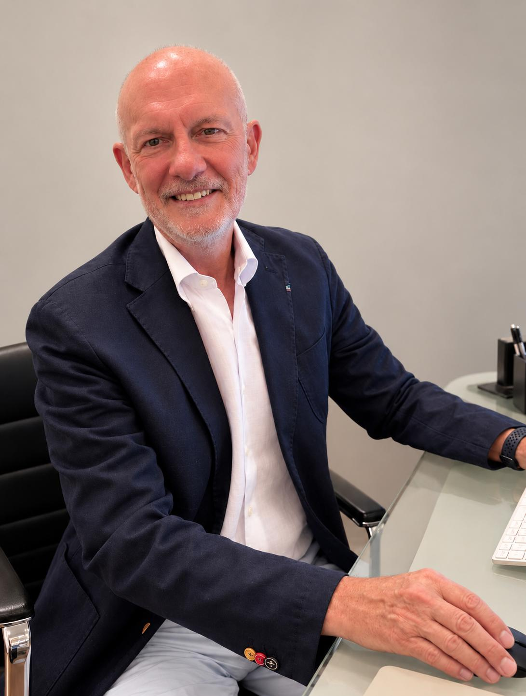

Serietà
Analisi chiare, valutazioni realistiche e parole misurate.

CONSULENZA · STRATEGIA · SVILUPPO
Affianchiamo imprenditori, professionisti e PMI nello sviluppo dei loro progetti, nell'accesso alle risorse finanziarie e nella costruzione di relazioni e partnership di valore.
Parliamo del tuo progetto ↗
ERREGì nasce dall'esperienza professionale del Dr. Roberto Gramaccia e dall'ascolto delle esigenze concrete di imprenditori e professionisti.
Un buon progetto non ha bisogno soltanto di numeri. Ha bisogno di essere compreso, costruito correttamente, reso sostenibile e accompagnato verso le opportunità necessarie alla sua realizzazione.
Per questo non proponiamo soluzioni standardizzate: costruiamo percorsi di consulenza dedicati, partendo dall'impresa, dall'idea e dall'obiettivo che si desidera raggiungere.
Conosci lo studio →Analisi chiare, valutazioni realistiche e parole misurate.
Obiettivi, possibilità e criticità condivisi fin dall'inizio.
Esperienza al servizio di progetti costruiti con metodo.
Un interlocutore che accompagna il percorso, non solo un documento.
Ogni impresa ha una storia diversa. Ogni progetto richiede una soluzione costruita su misura.
Trasformiamo un'idea in un progetto leggibile, valutabile e sostenibile: investimenti, ricavi, costi, flussi finanziari e documentazione di presentazione.
Analizziamo fabbisogno, sostenibilità e strumenti potenzialmente coerenti, affiancando il cliente nella preparazione e nell'interlocuzione con gli istituti.
Consulenza concreta e proporzionata per nuove iniziative, attività commerciali, artigiani, professionisti e piccole imprese che vogliono crescere.
Quando esistono complementarità reali, favoriamo relazioni professionali e collaborazioni capaci di generare valore reciproco.
Per investimenti più articolati sviluppiamo analisi progettuali e finanziarie coerenti con complessità, obiettivi e struttura dell'operazione.
Quando necessario, restiamo al fianco dell'impresa per verificare l'evoluzione del progetto e affrontare nuove opportunità di crescita.
Il nostro lavoro comincia prima dei numeri: dall'ascolto dell'imprenditore, dell'idea e dell'obiettivo che desidera raggiungere.
Conosciamo l'imprenditore, l'impresa e il progetto.
Verifichiamo numeri, fabbisogni, opportunità e criticità.
Costruiamo il Business Plan e il percorso operativo.
Affianchiamo il cliente nella presentazione e nelle interlocuzioni.
Seguiamo l'evoluzione del progetto e le opportunità successive.
Non vendiamo finanziamenti. Costruiamo progetti d'impresa.
ERREGì opera secondo condizioni definite preventivamente con il cliente attraverso l'incarico professionale.
Per le prestazioni nelle quali è prevista la formula success fee, il compenso dello Studio è collegato al raggiungimento dell'obiettivo individuato nell'incarico e alle relative condizioni contrattuali.
Non è una promessa di approvazione del finanziamento: la decisione resta di esclusiva competenza dei soggetti finanziatori. È una scelta di metodo, fondata sulla condivisione dell'obiettivo.
Le situazioni che seguono descrivono il nostro approccio. I progetti reali vengono raccontati solo nel rispetto della riservatezza e, quando necessario, in forma anonima.
L'idea: avviare una nuova attività partendo da competenze, intuizione e volontà di investire.
Il percorso: analizzare mercato, investimenti, costi, ricavi e struttura finanziaria per costruire un progetto coerente.
L'esigenza: ampliare servizi, investire in attrezzature, digitalizzare o aprire un nuovo canale commerciale.
Il percorso: leggere lo storico dell'impresa e costruire l'investimento come evoluzione sostenibile dell'attività.
La sfida: intervenire su investimenti, previsioni e fabbisogno quando i numeri richiedono maggiore prudenza.
Il risultato: un progetto più credibile, comprensibile e coerente con la capacità dell'impresa.
I progetti dei clienti contengono informazioni economiche, finanziarie e strategiche. La riservatezza è parte integrante della relazione professionale.
La consulenza non consiste nel dire al cliente ciò che desidera sentirsi dire.SERIETÀ · TRASPARENZA · PRESENZA
Consiste nell'aiutarlo a prendere decisioni più consapevoli.
INIZIAMO DA QUI
Non occorre avere già un Business Plan o conoscere il finanziamento da richiedere. Possiamo partire da un'idea, da un investimento o da una domanda.
Dr. Roberto Gramaccia
Founder – ERREGì Studio di Consulenza d'Impresa
Via Mario Angeloni 47
06124 Perugia (PG)
327 212 0065
info@erregiconsulenza.it
Riceviamo su appuntamento. Alcune fasi della consulenza possono essere gestite anche a distanza, in relazione al progetto.
Racconta il tuo progetto ↗